In exam11 pages · 180 KB Open original PDF ↗
Σ Read the summary: التوزيع والتجميع في سحاب الجميعDefinitions, Q/ questions and comparison tables ✎ Take the mock exam for this lectureTimed, sectioned like the real exam, with model answers and marks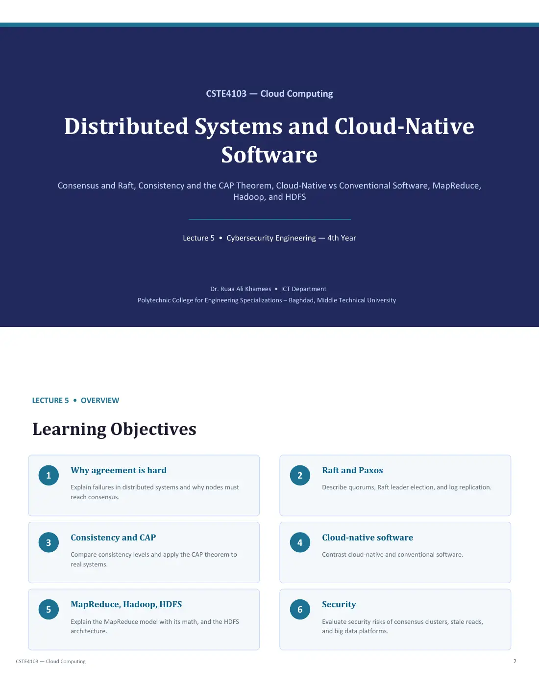
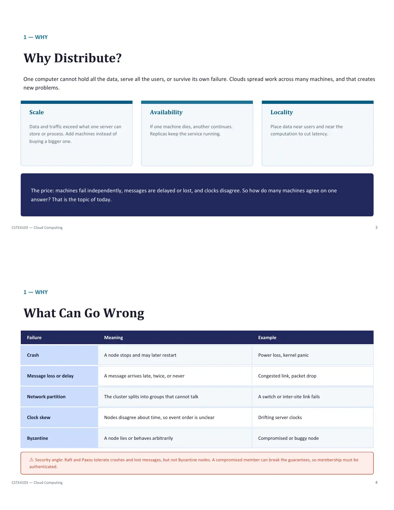
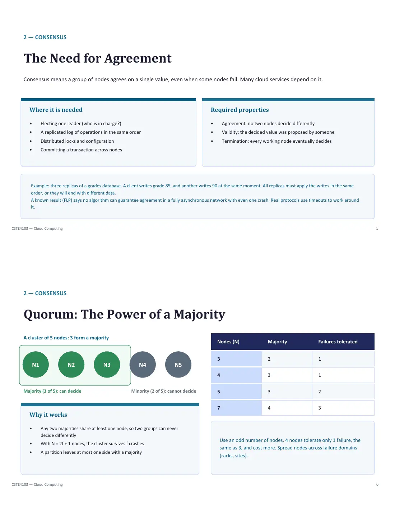
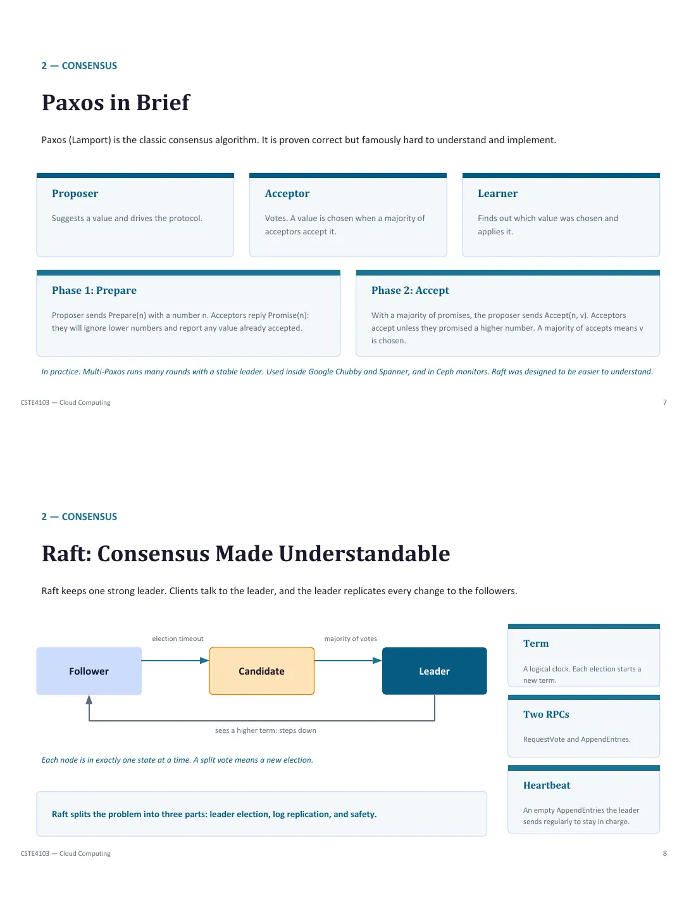
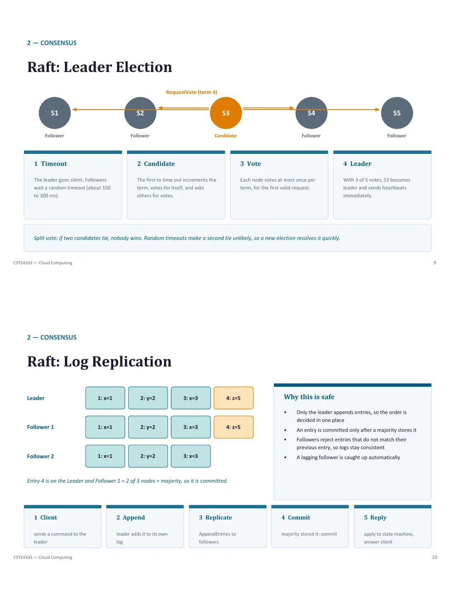
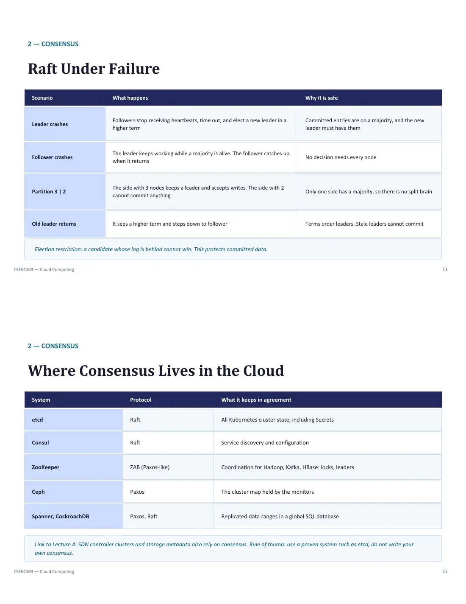
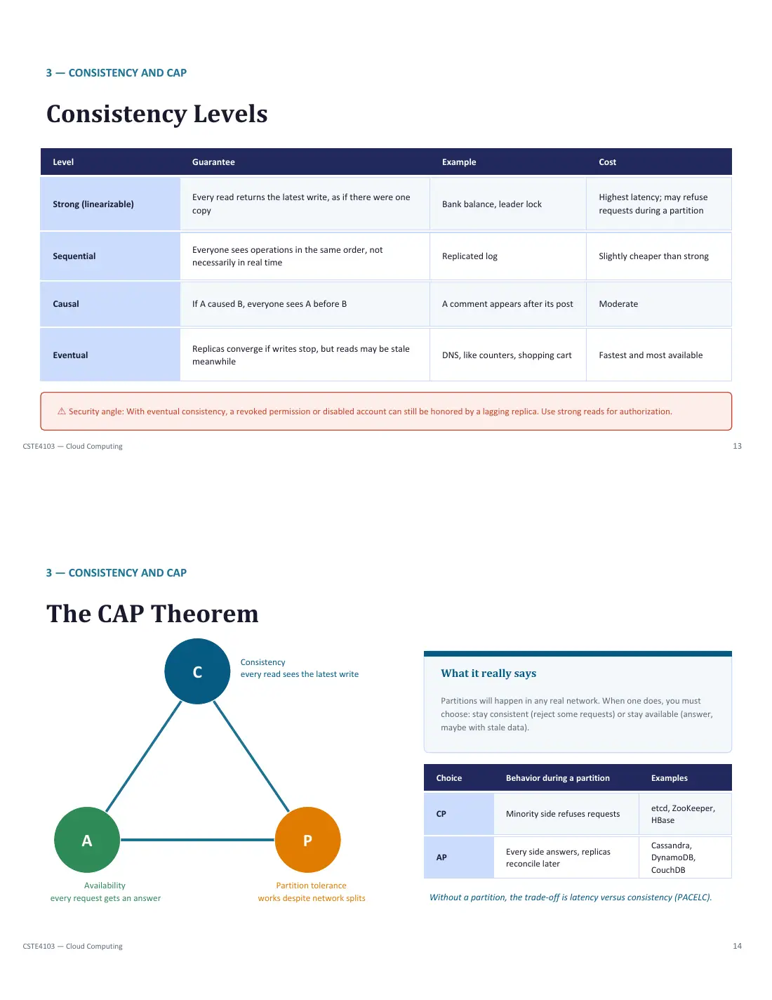
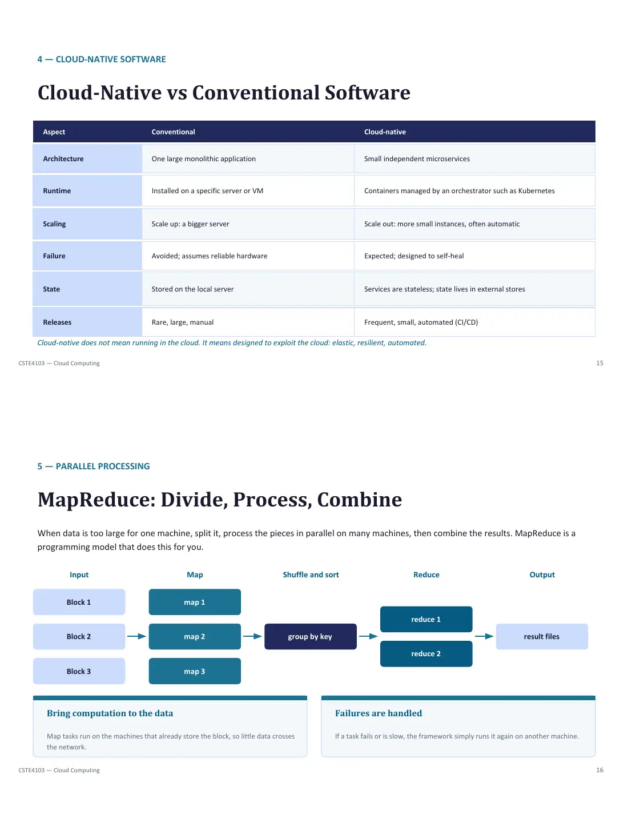
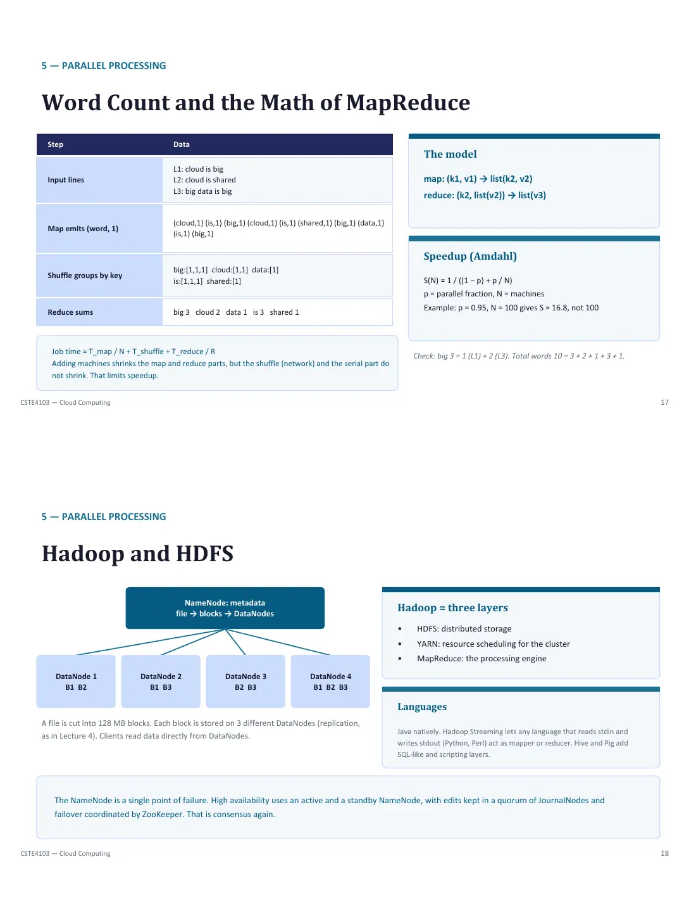
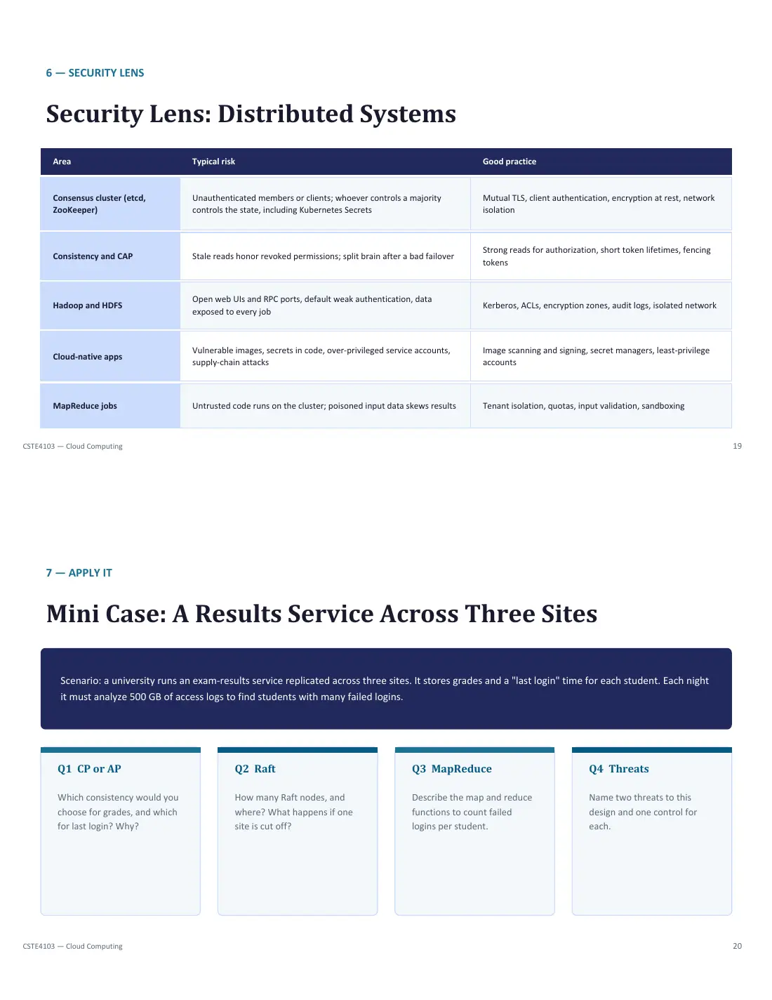
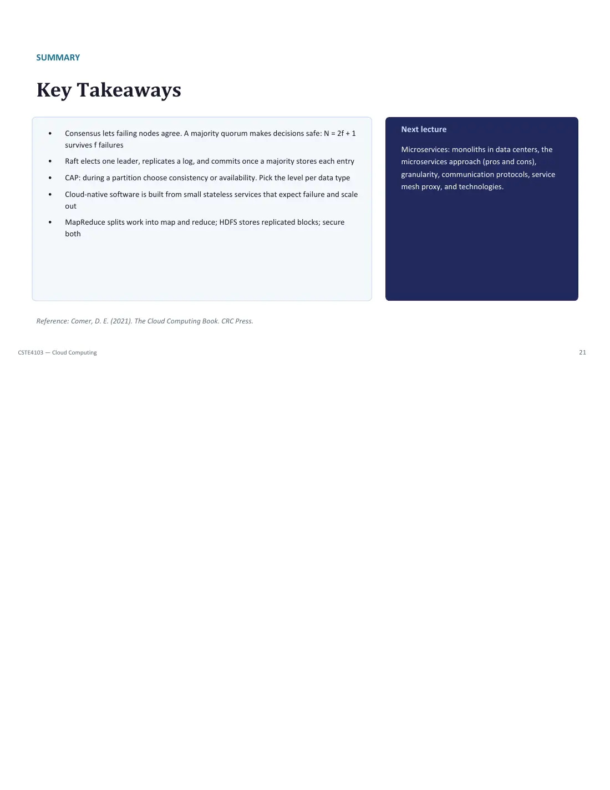